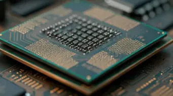
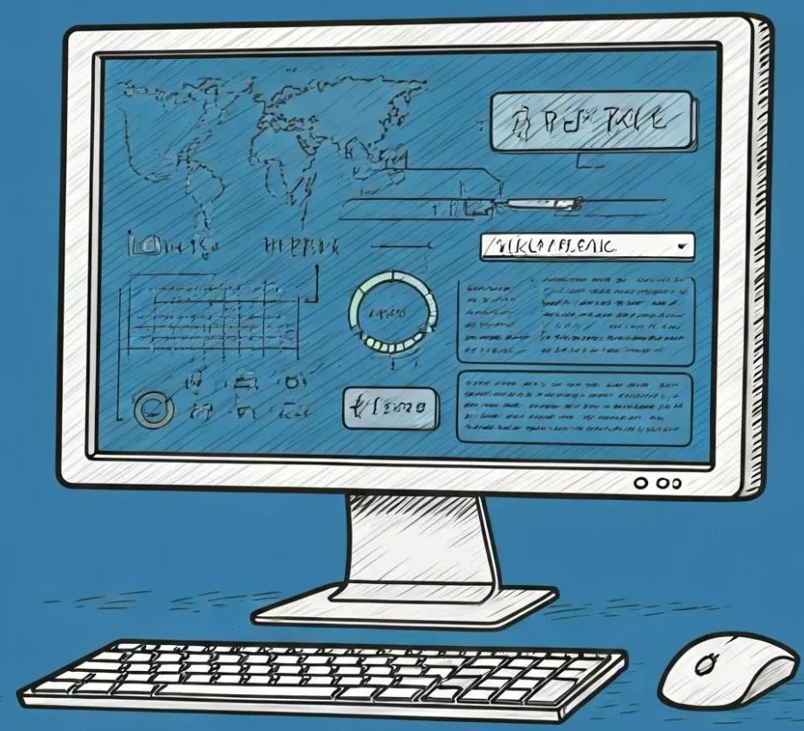
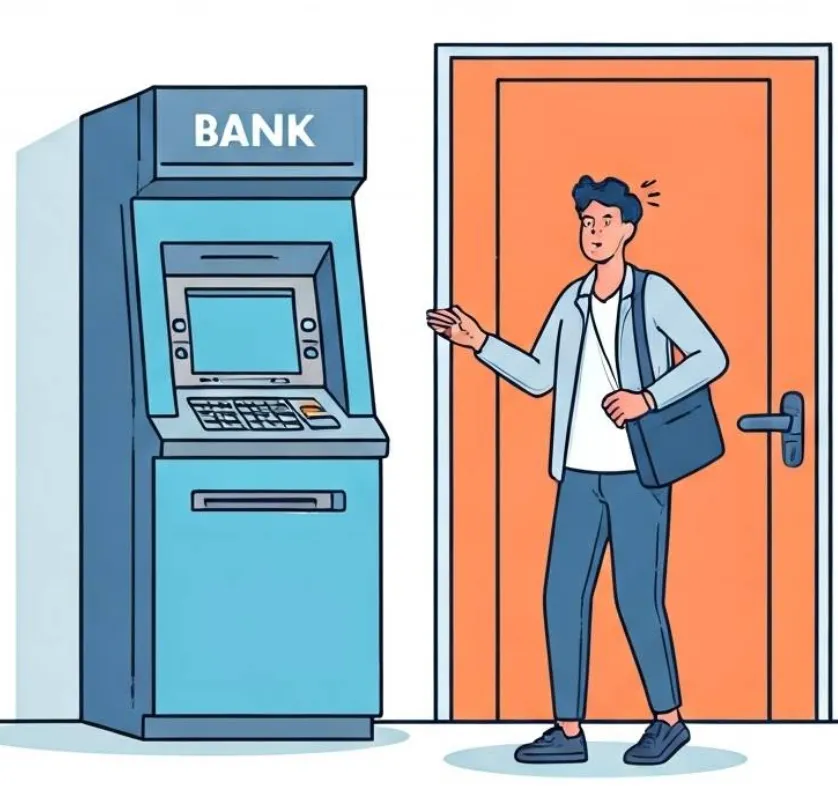

Guía 821: Concepto Lógica computacional (P1)¶
|
|

Exploración Estructuración Actividad práctica Transferencia
Temática: Concepto de lógica computacional.
Objetivo de aprendizaje: Repasar los conceptos de hardware, software, sistemas computacionales y el razonamiento lógico para comprender el concepto de lógica computacional.
Componente: Naturaleza y Evolución de la T&I.
Competencia: Relaciono saberes, conocimientos tecnológicos e informáticos con los conocimientos de otras disciplinas.
Evidencia de aprendizaje: Comprendo los principios y conocimientos tecnológicos e informáticos que hacen posible el funcionamiento de productos tecnológicos actuales.
Actividades desarrolladas en su totalidad.
Participación en clase.
Explicación clara de conceptos.
Argumentación de ideas.
Cumplimiento de las reglas del aula.
Esta guía no contiene recursos.
Mensaje del autor¶
“En esta guía, el estudiante comprenderá los conceptos de hardware y software. Asimismo, argumentará la importancia del uso de la CPU y la memoria RAM en el procesamiento de la información. Además, analizará el concepto de sistema computacional, el cual forma parte de la definición de informática. Finalmente, integrará los conceptos de razonamiento y lógica para analizar la definición de lógica computacional.”
—Camilo Fonseca
A00: Introducción (5%)¶
Exploración
Transcriba en su cuaderno el objetivo, las orientaciones curriculares y los criterios de evaluación de la presente guía.
Lea el mensaje del autor y en su cuaderno responda:
¿Qué tienen en común un smartphone, un smartTV y un computador?
A01: Concepto de lógica computacional (5%)¶
Estructuración
Lea los siguientes conceptos:
¿Qué es el HARDWARE?¶
[1] El HARDWARE, es el conjunto de componentes de un sistema informático (por ejemplo un computador) los cuales se pueden ver o tocar.
Estos componentes se clasifican en componentes de entrada, salida, procesamiento, memoria y almacenamiento.
A continuación se muestran algunos ejemplos:
Dispositivos de entrada: Teclados, mouse, micrófonos
Dispositivos de salida: Monitores, impresoras, bafles
Procesamiento: CPU
Memoria: memoria RAM, memoria CACHE
Almacenamiento: Discos duros, memorias USB
CPU (Unidad de procesamiento central)¶
 CPU¶ |
{kind=link}
“Muchas personas confunden la CPU con una torre de PC. Realmente son cosas diferentes”.
[1] La CPU es considerada el “cerebro” del computador. Es el elemento principal que se encarga de:
Procesar todas las instrucciones y cálculos del sistema
Coordinar el funcionamiento de los demás componentes
Ejecutar los programas y aplicaciones
La CPU está compuesta principalmente por:
Unidad de control: Coordina y dirige todas las operaciones.
ALU: Unidad Lógica Aritmética. Realiza cálculos matemáticos y operaciones lógicas
Registros: Son unidades pequeñas de memoria de alta velocidad
La velocidad de la CPU se mide en Hertz (Hz) y determina qué tan rápido puede procesar las instrucciones. A mayor velocidad, mejor rendimiento del sistema.
MEMORIA RAM¶

Memoria RAM¶ |
[1] La memoria RAM (Memoria de acceso aleatorio) tiene las siguientes funciones:
ALMACENA temporalmente los datos y programas que el computador está usando activamente.
ACCEDE rápidamente a la información (SI y SOLO SI el equipo está encendido).
Las características de la memoria RAM son:
Se borra cuando se apaga el computador (memoria volátil).
A mayor cantidad de RAM, más programas pueden ejecutarse simultáneamente.
Su velocidad afecta directamente el rendimiento del sistema.
Es diferente al almacenamiento permanente (disco duro) porque la memoria RAM es temporal.
¿Qué es el SOFTWARE?¶

Ejemplo de interfaz gráfica¶ |
[1] El SOFTWARE, es el conjunto de: programas, bases de datos, diferentes tipos de archivos y documentación que le dicen al HARDWARE qué hacer. A diferencia del hardware que es físico y tangible, el software no se puede tocar.
El software solo puede verse su funcionamiento en la pantalla. El software es la parte lógica e intangible de un sistema informático. El software se clasifica de la siguiente manera:
Sistema: Software que controla el funcionamiento básico del computador como por ejemplo: Firmware BIOS, Firmware UEFI, OS Windows, OS Linux, MacOS, Controladores o Drivers.
Aplicaciones: Diferente software que funciona sobre un sistema operativo como por ejemplo: Procesadores de texto, navegadores web, juegos, editores de imagen, modelado en 3D. La mayoría suelen tener interfáz gráfica.
Una interfaz gráfica es un sistema que permite a los usuarios interactuar con dispositivos electrónicos a través de elementos visuales en la pantalla, como iconos, botones y menús. Esto facilita la realización de acciones sin necesidad de conocimientos de programación, haciendo la experiencia más intuitiva y accesible.
¿Qué es una SISTEMA COMPUTACIONAL?¶
[2] Un sistema computacional es el conjunto de hardware que interactúa con un software para almacenar, procesar y mostrar información.
 Computadora¶ |
{kind=link}
¿Qué es la INFORMÁTICA?¶
[2] La informática es la ciencia o disciplina que estudia el diseño, construcción e implementación de sistemas computacionales para garantizar la integridad y disponibilidad de la información.
REGLA 01: (Integridad de la información)
“Toda información debe conservar su integridad para que no pueda ser modifica sin autorización”.
REGLA 02: (Disponibilidad de la información)
“Toda información debe estar disponible y llegar oportunamente”.
¿Qué es RAZONAR?¶
[3] Razonar es la actividad mental mediante la cual se relacionan ideas o premisas para inferir una conclusión de manera coherente o justificada.
Por ejemplo:
Premisa 01: Todos los humanos son mortales
Premisa 02: Sócrates es humano
Conclusión: Sócrates es mortal
¿Qué es la LÓGICA?¶
[3] La lógica es la disciplina que permite analizar y verificar la validez de los razonamientos, determinando si una conclusión se deriva correctamente de unas premisas.
Por ejemplo:
Para el siguiente razonamiento, verifique si es correcto o no:
Premisa 01: Todos los humanos son mortales
Premisa 02: Sócrates es humano
Conclusión: Sócrates es mortal
ANÁLISIS: Si Sócrates es un ser humano, entonces Sócrates es mortal porque todos los humanos son mortales. El razonamiento es correcto.
¿Qué es lógica computacional?¶
[3] La lógica computacional es el área de la informática que aplica los principios de la lógica para representar y automatizar el razonamiento, con el objetivo de resolver problemas de forma estructurada y eficiente.
A02: Taller (10%)¶
Estructuración
En su cuaderno responda las siguientes preguntas:
¿Qué es el hardware?
¿De que se compone el hardware de un sistema informático?
¿El concepto de hardware solo puede aplicarse a computadores? ¿Por qué?
En su cuaderno cree un mapa conceptual que muestre los diferentes componentes del hardware y dos ejemplos por cada componente.
En su cuaderno responda las siguientes preguntas:
¿Qué es la CPU?
¿Por qué la CPU es considerada el cerebro del computador?
¿En que se mide la velocidad de las CPUs?
¿Qué significa que una velocidad en la CPU sea alta o baja?
En su cuaderno cree un mapa conceptual de los tres componentes principales de la CPU y descríbalos.
En INTERNET, consulte 3 marcas de fabricantes de CPU y descríbalas en su cuaderno.
En su cuaderno responda las siguientes preguntas:
¿Qué es la memoria RAM?
¿De que se encarga la memoria RAM?
¿Por qué la memoria RAM es tan importante al momento de procesar la información?
¿Cuales son las características de la memoria RAM?
En Internet, consulte las diferentes generaciones de memoria RAM y describalas en su cuaderno.
En su cuaderno responda las siguientes preguntas:
¿Qué es el software?
¿En qué se diferencian el HARDWARE y el SOFTWARE?
¿Por qué los controladores de HARDWARE no necesitan interfaz gráfica?
En su cuaderno, cree un mapa conceptual que presente la clasificación del software.
Consulte en Internet y luego en su cuaderno realice una descripción de lo siguiente:
10 sistemas operativos de la empresa MICROSOFT.
1 sistema operativo de la empresa GOOGLE.
3 sistemas operativos de la empresa APPLE.
En Internet, consulte dos ejemplos para cada uno de los siguientes tipos de aplicación. Las características de los ejemplos encontrados descríbalas en su cuaderno:
Procesadores de texto.
Navegadores web.
Videojuegos.
Editores de imágenes.
Modelado 3D.
En su cuaderno responda las siguientes preguntas:
¿Qué es un sistema computacional?
¿De qué manera un hardware interactúa con un software? (piense en un smartphone, un smart-TV, etc.)
¿Cómo un sistema computacional interactúa con la información? (piense en un software como Microsoft EXCEL o WHATSAPP)
Responda las siguientes preguntas en su cuaderno:
¿En que se relacionan la informática y la información?
Aparte de la integridad y disponibilidad, ¿Qué otras reglas pueden ser aplicadas en la información?
¿Qué es razonar?
¿Qué es lógica?
¿Cómo se relacionan los conceptos de razonar y lógica?
¿Se podrían comprobar resultados de razonamiento sin aplicar lógica? (explique su respuesta).
¿Qué es un algoritmo?
¿Qué es lógica computacional?
¿Cómo se relaciona la lógica computacional y la informática?
¿Cómo se relacionan los algoritmos y la lógica computacional?
En su cuaderno escriba las siguientes frases e indique si es FALSO, VERDADERO y explique el por qué:
“La lógica computacional establece las reglas para programar una persona y modificar su comportamiento”. __
“Optimizar algoritmos permite solucionar problemas más rápido pero con los mismos recursos”. __
A03: Análisis (20%)¶
Actividad práctica
Con los temas vistos hasta ahora, en UNA PÁGINA DE CUADERNO, con sus palabras (no usar IA) responda la siguiente pregunta:
¿Por qué la memoria RAM y la CPU son tan importantes al momento de procesar información?
En su cuaderno, con sus palabras escriba 5 ejemplos de sistemas computacionales (no usar IA). Tenga en cuenta el siguiente ejemplo:
EJEMPLO 01: Un portátil es un ejemplo de sistema computacional porque su hardware (teclado, pantalla, touchpad) y software (OS, aplicaciones de escritorio) permite registrar, almacenar y mostrar información para un usuario”.
En su cuaderno, escriba los siguientes casos y por cada uno indique si aplica la regla 01 (Integridad de la información) o aplica la regla 02 (disponibilidad de la información) (escribir el por qué)
CASO 01: “Un banco suele entregar valores de saldo una hora después de ser solicitado. El uso de computadoras permiten que la información este disponible y llegue oportunamente (milésimas de segundo)”. El Administrador está revisando si el problema es de los PCs o incompetencia laboral.
CASO 02: “De nada sirve que una persona vaya al banco a consultar su saldo si este no corresponde al saldo real. Las computadoras permiten que la información conserve su estado sin los riesgos que representa tenerla en otros medios como el papel”.

BANCOS: Los bancos deben garantizar integridad y disponibilidad¶
CASO 03: Al finalizar el período, el profesor sube las calificaciones definitivas a la plataforma. Cuando un estudiante entra a revisar su reporte, nota que en la asignatura de Tecnología tiene un 5.0, a pesar de que sabe que su nota real era 3.5 porque no entregó el último trabajo. Al investigar, se descubre que hubo un fallo en la base de datos que alteró los números de varios alumnos.
CASO 04: Faltan 10 minutos para que se cierre la plataforma virtual donde los estudiantes deben subir su proyecto de grado. De repente, el servidor del colegio sufre una sobrecarga debido a la cantidad de accesos simultáneos y se cae por completo. Ningún estudiante puede entrar a la página ni enviar sus archivos durante las siguientes dos horas. Los documentos están intactos en los computadores, pero nadie puede entregarlos.
CASO 05: Un estudiante está trabajando en su guía de laboratorio dentro del aula de sistemas. Mientras el archivo se está guardando en el disco duro, otro compañero tropieza accidentalmente con el cable de energía de la torre y el computador se apaga bruscamente. Al reiniciar el equipo e intentar abrir el documento, aparece un mensaje de error que dice: “El archivo está dañado o su formato no es válido”.
Razone la siguiente situación y en su cuaderno DEDUZCA que pudo haber pasado (3 conclusiones con temáticas diferentes):
Premisa 01: Una persona escuchó ruidos extraños en su casa.
Premisa 02: Los ruidos fueron en horas de la noche.
Premisa 03: Habían varios residuos de comida en el piso.
Premisa 04: El computador estaba desconectado.
Premisa 05: No hay ningún objeto perdido.
Conclusión 01: ?
Conclusión 02: ?
Conclusión 03: ?
{kind=link}
A04: Examen escrito (60%)¶
Transferencia
TIEMPO |
29 minutos |
PREGUNTAS |
10 |
OBJETIVO |
Comprobar conocimientos adquiridos. |
INSTRUCCIONES |
Cuadernos y celulares guardados. Solo se permite hoja, lapiz y borrador. |
Posibles preguntas
Explique con sus propias palabras qué es el hardware y mencione al menos tres categorías en las que se clasifican sus componentes, dando un ejemplo de cada una.
¿Por qué la CPU es considerada el “cerebro” del computador? Describa sus tres componentes principales y su función.
Escriba las funciones principales de la memoria RAM y explique por qué es fundamental en el procesamiento de información.
Compare y contraste el hardware y el software, resaltando sus diferencias fundamentales.
¿Qué es el software y cómo se clasifica? Describa brevemente cada una de sus categorías principales.
Describa el concepto de “interfaz gráfica” y explique su importancia para los usuarios.
Defina qué es un “sistema computacional” y cómo interactúan sus componentes para procesar información.
¿Qué es la informática y cuáles son sus objetivos principales en relación con los sistemas computacionales?
Explique las dos reglas fundamentales de la informática (Integridad y Disponibilidad de la información) y por qué son importantes.
Describa el concepto de “razonar” y proporcione un ejemplo propio (diferente al ejemplo de sócrates), que incluya premisas y una conclusión.
¿Qué es la lógica y cómo se relaciona con el razonamiento? Explique su papel en la verificación de la validez de los argumentos.
¿Se podría comprobar la validez de un razonamiento sin aplicar principios de lógica? Justifica tu respuesta.
Defina qué es un “algoritmo” y cuáles son sus características principales.
¿Qué es la “lógica computacional” y cómo aplica los principios de la lógica y la informática?
¿Cómo se relacionan los algoritmos y la lógica computacional en la resolución de problemas?
Basándose en la información sobre hardware y software, ¿cómo cree que un smartphone o una tablet funcionan como sistemas computacionales?
¿Por qué es importante que la memoria RAM y la CPU trabajen de manera coordinada para un buen rendimiento del sistema?
Escriba un ejemplo de su vida diaria donde se aplique el concepto de “disponibilidad de la información”.
Explique un escenario donde la “integridad de la información” sea crucial y qué podría suceder si esta se viera comprometida.
¿Cómo la evolución del hardware y el software ha impactado la forma en que utilizamos los sistemas computacionales hoy en día?